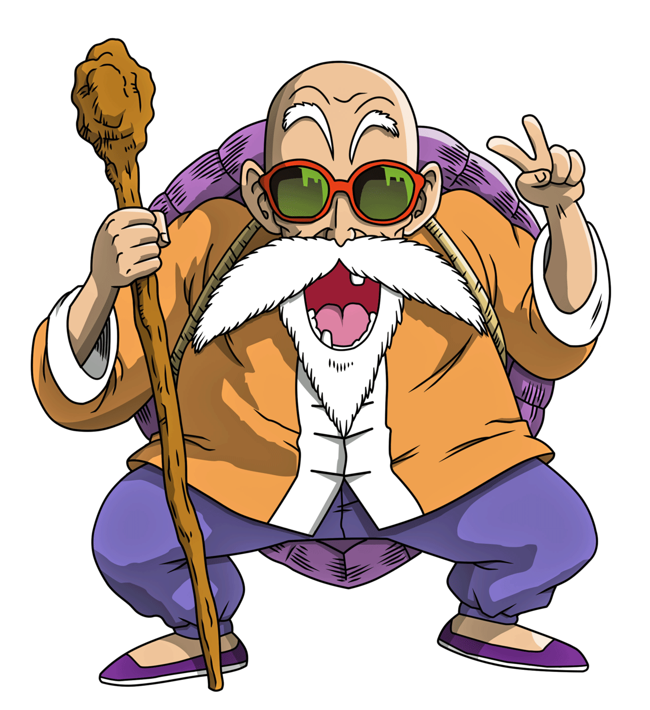
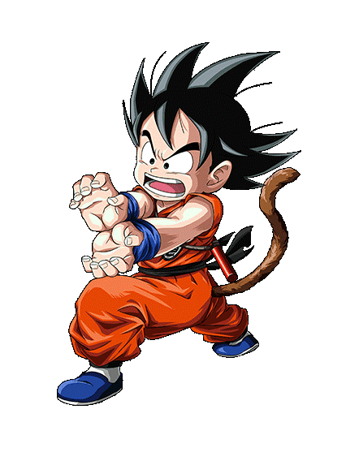

The man who created Dragon Ball

Some facts about Toriyama's life:
- He was born April, 1955 in Nagoya, Japan.
- He is currently married to Nachi Mikami and they have two children.
- He earned the 1981 Shogakukan Manga Award for best shōnen or shōjo manga with Dr. Slump, and it went on to sell over 35 million copies in Japan.
- His next series, Dragon Ball, is the second best-selling manga of all time and is considered to be one of the main reasons for the period when manga circulation was at its highest in the mid-1980s and mid-1990s.
- Toriyama's design sense led to a position designing characters for the popular Dragon Quest series of role-playing video games.
- He has also served as the character designer for the Super Famicom RPG Chrono Trigger and for the fighting games Tobal No. 1 and Tobal 2 for the PlayStation.
- He collaborated with Shōnen Jump to create a video to raise awareness and support for those affected by the 2011 Tōhoku earthquake and tsunami on March 11, 2011.
- He currently contributes to the Dragon Ball Super anime and manga since June 2015.

Tackle life with as much energy as Gokuh! I'll try to do the same!